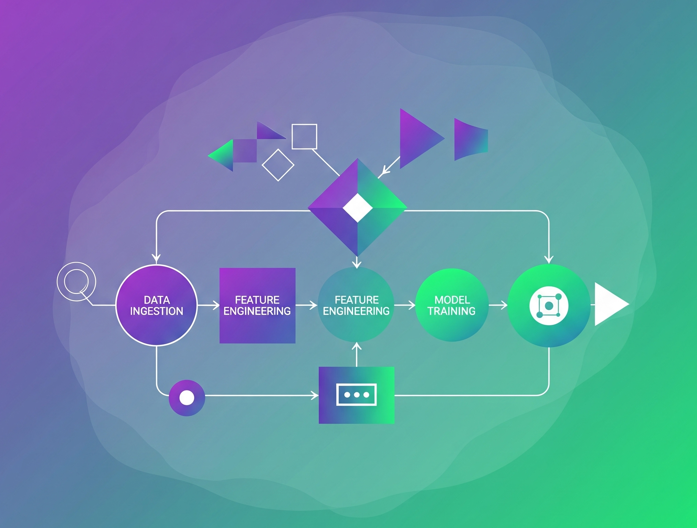

import seaborn as sns
import pandas as pd
# Load the Titanic dataset
df = sns.load_dataset("titanic")
# Drop rows with missing target
df = df.dropna(subset=["survived"])
# Define features and target
X = df[["pclass", "sex", "age", "fare", "embarked"]]
y = df["survived"]Streamline Your ML Workflow with Scikit-learn Pipelines
Pipelines
python
Data Science
Machine Learning


Introduction
If you’ve spent any time building Machine Learning models, you know the process isn’t just about picking an algorithm and hitting “train.” It involves a series of sequential steps: data preprocessing, feature engineering, scaling, dimensionality reduction, and finally, model training.
{Source: ChatGPT, height=500px, width= 1000px}
Managing these steps independently can quickly lead to messy, repetitive code, potential data leakage, and difficulties in hyperparameter tuning. This is where Scikit-learn Pipelines come to the rescue!
In this post, we’ll dive deep into what scikit-learn pipelines are, why they’re indispensable for any serious ML project, and how to implement them with practical code examples.
The Problem Pipelines Solve: A Messy Workflow
Imagine you’re building a classification model. Your typical workflow might look like this:
- Load Data: Read your CSV file.
- Split Data: Separate features (X) and target (y), then split into training and testing sets.
- Preprocess Numerical Features: Apply StandardScaler to numerical columns.
- Preprocess Categorical Features: Apply OneHotEncoder to categorical columns.
- Combine Features: Put all preprocessed features back together.
- Train Model: Fit your LogisticRegression model on the transformed training data.
- Evaluate Model: Make predictions on the transformed test data and calculate metrics.
This sequential nature means that every time you want to try a different scaling method, a new feature engineering step, or a different model, you have to manually apply those transformations to both your training and testing data. It’s tedious, error-prone, and worst of all, increases the risk of data leakage.
Data leakage occurs when information from your test set inadvertently “leaks” into your training process. For example, if you fit a StandardScaler on your entire dataset (train + test) before splitting, your scaler learns the mean and standard deviation of the test data, giving your model an unfair advantage during evaluation. Pipelines inherently prevent this.
What are Scikit-learn Pipelines?
A scikit-learn Pipeline sequentially applies a list of transformers and a final estimator. Think of it as a single, consolidated Scikit-learn object that encapsulates your entire machine learning workflow from preprocessing to prediction.
Each step in the pipeline is a tuple (‘name’, estimator), where ‘name’ is a string identifier for that step (useful for hyperparameter tuning) and ‘estimator’ is a scikit-learn compatible transformer (like StandardScaler, SimpleImputer, OneHotEncoder) or a final estimator (like LogisticRegression, RandomForestClassifier).
Practical Examples: Building Pipelines Step-by-Step
We’ll use the Titanic dataset from Seaborn. It contains both numerical and categorical features, making it ideal for demonstrating preprocessing steps in pipelines.
Load Dataset
Numerical features
from sklearn.pipeline import Pipeline
from sklearn.compose import ColumnTransformer
from sklearn.impute import SimpleImputer
from sklearn.preprocessing import OneHotEncoder, StandardScaler
# Numeric columns to scale
num_features = ["age", "fare"]
num_pipeline = Pipeline([
("imputer", SimpleImputer(strategy="median")),
("scaler", StandardScaler())
])
num_pipelinePipeline(steps=[('imputer', SimpleImputer(strategy='median')),
('scaler', StandardScaler())])In a Jupyter environment, please rerun this cell to show the HTML representation or trust the notebook. On GitHub, the HTML representation is unable to render, please try loading this page with nbviewer.org.
Pipeline(steps=[('imputer', SimpleImputer(strategy='median')),
('scaler', StandardScaler())])SimpleImputer(strategy='median')
StandardScaler()
- SimpleImputer(strategy=“median”): Fills missing numeric values with the median of the column.
- StandardScaler(): Standardizes features by removing the mean and scaling to unit variance.
Categorical Features
# Categorical columns to encode
cat_features = ["pclass", "sex", "embarked", "age_group"]
cat_pipeline = Pipeline([
("imputer", SimpleImputer(strategy="most_frequent")),
("encoder", OneHotEncoder(handle_unknown="ignore"))
])
cat_pipelinePipeline(steps=[('imputer', SimpleImputer(strategy='most_frequent')),
('encoder', OneHotEncoder(handle_unknown='ignore'))])In a Jupyter environment, please rerun this cell to show the HTML representation or trust the notebook. On GitHub, the HTML representation is unable to render, please try loading this page with nbviewer.org.
Pipeline(steps=[('imputer', SimpleImputer(strategy='most_frequent')),
('encoder', OneHotEncoder(handle_unknown='ignore'))])SimpleImputer(strategy='most_frequent')
OneHotEncoder(handle_unknown='ignore')
- SimpleImputer(strategy=“most_frequent”): Fills missing categorical values with the most common category.
- OneHotEncoder(): Converts categorical variables into a binary matrix.
- handle_unknown=“ignore” ensures the encoder can handle unseen categories during inference.
Combining Numerical and Categorical pipeline into one
# Combine numeric and categorical transformers
preprocessor = ColumnTransformer([
("num", num_pipeline, num_features),
("cat", cat_pipeline, cat_features)
])
preprocessorColumnTransformer(transformers=[('num',
Pipeline(steps=[('imputer',
SimpleImputer(strategy='median')),
('scaler', StandardScaler())]),
['age', 'fare']),
('cat',
Pipeline(steps=[('imputer',
SimpleImputer(strategy='most_frequent')),
('encoder',
OneHotEncoder(handle_unknown='ignore'))]),
['pclass', 'sex', 'embarked', 'age_group'])])In a Jupyter environment, please rerun this cell to show the HTML representation or trust the notebook. On GitHub, the HTML representation is unable to render, please try loading this page with nbviewer.org.
ColumnTransformer(transformers=[('num',
Pipeline(steps=[('imputer',
SimpleImputer(strategy='median')),
('scaler', StandardScaler())]),
['age', 'fare']),
('cat',
Pipeline(steps=[('imputer',
SimpleImputer(strategy='most_frequent')),
('encoder',
OneHotEncoder(handle_unknown='ignore'))]),
['pclass', 'sex', 'embarked', 'age_group'])])['age', 'fare']
SimpleImputer(strategy='median')
StandardScaler()
['pclass', 'sex', 'embarked', 'age_group']
SimpleImputer(strategy='most_frequent')
OneHotEncoder(handle_unknown='ignore')
Note
ColumnTransformer allows different preprocessing for numerical and categorical features.
Adding a custom Transformer
from sklearn.base import BaseEstimator, TransformerMixin
class AgeGroupAdder(BaseEstimator, TransformerMixin):
def fit(self, X, y=None):
return self
def transform(self, X):
X = X.copy()
X["age_group"] = pd.cut(
X["age"],
bins=[0, 12, 18, 50, 100],
labels=["child", "teen", "adult", "senior"]
)
return X- We inherit from BaseEstimator and TransformerMixin to make it compatible with Scikit-learn pipelines.
- pd.cut() creates a new categorical feature age_group by binning the age variable.
- This step is reusable and testable, like any Scikit-learn transformer.
Full pipeline with Model
We’ll now build the complete pipeline by chaining the custom transformer, preprocessing, and a simple model.
from sklearn.linear_model import LogisticRegression
# Final pipeline
model_pipeline = Pipeline([
("feature_engineering", AgeGroupAdder()),
("preprocessing", preprocessor),
("classifier", LogisticRegression(max_iter=1000))
])
model_pipelinePipeline(steps=[('feature_engineering', AgeGroupAdder()),
('preprocessing',
ColumnTransformer(transformers=[('num',
Pipeline(steps=[('imputer',
SimpleImputer(strategy='median')),
('scaler',
StandardScaler())]),
['age', 'fare']),
('cat',
Pipeline(steps=[('imputer',
SimpleImputer(strategy='most_frequent')),
('encoder',
OneHotEncoder(handle_unknown='ignore'))]),
['pclass', 'sex', 'embarked',
'age_group'])])),
('classifier', LogisticRegression(max_iter=1000))])In a Jupyter environment, please rerun this cell to show the HTML representation or trust the notebook. On GitHub, the HTML representation is unable to render, please try loading this page with nbviewer.org.
Pipeline(steps=[('feature_engineering', AgeGroupAdder()),
('preprocessing',
ColumnTransformer(transformers=[('num',
Pipeline(steps=[('imputer',
SimpleImputer(strategy='median')),
('scaler',
StandardScaler())]),
['age', 'fare']),
('cat',
Pipeline(steps=[('imputer',
SimpleImputer(strategy='most_frequent')),
('encoder',
OneHotEncoder(handle_unknown='ignore'))]),
['pclass', 'sex', 'embarked',
'age_group'])])),
('classifier', LogisticRegression(max_iter=1000))])AgeGroupAdder()
ColumnTransformer(transformers=[('num',
Pipeline(steps=[('imputer',
SimpleImputer(strategy='median')),
('scaler', StandardScaler())]),
['age', 'fare']),
('cat',
Pipeline(steps=[('imputer',
SimpleImputer(strategy='most_frequent')),
('encoder',
OneHotEncoder(handle_unknown='ignore'))]),
['pclass', 'sex', 'embarked', 'age_group'])])['age', 'fare']
SimpleImputer(strategy='median')
StandardScaler()
['pclass', 'sex', 'embarked', 'age_group']
SimpleImputer(strategy='most_frequent')
OneHotEncoder(handle_unknown='ignore')
LogisticRegression(max_iter=1000)
- Pipeline: Sequentially applies steps.
- LogisticRegression: A basic classification model ideal for binary outcomes like survived.
Model Training and Evaluation
from sklearn.model_selection import train_test_split
from sklearn.metrics import accuracy_score, classification_report
# Split into train and test sets
X_train, X_test, y_train, y_test = train_test_split(
X, y, test_size=0.2, random_state=42
)
# Train the pipeline
model_pipeline.fit(X_train, y_train)
# Make predictions
y_pred = model_pipeline.predict(X_test)
# Evaluate results
print("Accuracy:", accuracy_score(y_test, y_pred))
print(classification_report(y_test, y_pred))Accuracy: 0.8044692737430168
precision recall f1-score support
0 0.82 0.85 0.84 105
1 0.77 0.74 0.76 74
accuracy 0.80 179
macro avg 0.80 0.80 0.80 179
weighted avg 0.80 0.80 0.80 179
- train_test_split(): Splits the data into training and test sets.
- fit(): Trains the entire pipeline (including feature engineering and preprocessing).
- predict(): Makes predictions on new data.
- accuracy_score() and classification_report(): Evaluate model performance.
Scikit-learn pipelines are a powerful way to:
- Keep your code clean and modular
- Avoid data leakage by applying transformations only to training data
- Easily include custom steps like feature engineering
Connect with Me
Desclaimer
I use AI tools to assist in writing and drafting some of the content on this blog. but all content is reviewed and edited by me for accuracy and clarity.
💬 Comments